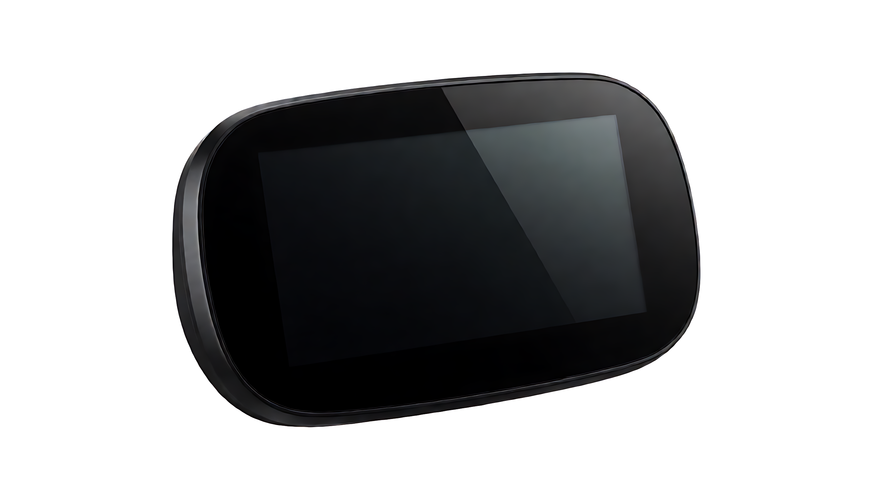

01 / READ AT A GLANCE
先看懂，再出发。
屏幕设计首先解决阅读顺序。以下为信息架构示意，并非现有仪表的实际 UI 或已确认功能。
- 第一眼：速度与行驶状态
高频、与安全相关的信息应有足够的尺寸和对比度。
- 第二眼：电量、档位与里程
在不压缩主信息的前提下，保持稳定的位置和阅读节奏。
- 需要时：告警和提示
告警应说明优先级、触发条件与恢复方式，避免颜色堆叠。
屏幕为本页 HTML 信息架构示意，无实时车速或设备数据。
02 / DISPLAY SCENARIOS
光线变了，信息依然要清楚。
选择阅读场景，查看界面如何保持层级。场景切换仅演示设计方案；自动亮度、夜间模式和具体亮度指标须按型号验证。
日间：先保证关键内容可辨
关注屏幕对比度、字体尺寸与安装角度。是否具备自动亮度调节，需要真实型号和光学测试资料确认。
- 光学亮度测试条件待补
- 反射与视角测试待补
- 实际日间界面截图待补
03 / NAVIGATION & CONNECTION
手机与车端，各有分工。
导航和互联应说明信息从哪里来、怎样传到仪表，以及离线时如何处理。旧站只提供方向描述，尚不足以证明具体功能。
规划路线或设置目标；是否由现有 App 提供需确认。
蓝牙或其他通信方式、协议和配对条件需确认。
转向提示、路线同步或地图呈现应逐项定义。
断连、延迟与重连提示应在样车上验证。
04 / FORM & FIT
从屏幕到装车位置。
外观轮廓只是适配的起点。结构、支架、线束和可视角度需对应具体型号。

安装前，核对四件事。
- 外形尺寸
- 可用空间、支架孔位与遮挡关系
- 连接方式
- 线束出口、连接器方向与协议
- 可视条件
- 骑行姿态、视角、遮光与反射
- 环境边界
- 温度、振动、防护与耐候条件
没有实际分层结构图，暂不展示盖板、显示模组和密封件的内部拆解。
05 / SELECTION & CUSTOMIZATION
先确定硬件，再讨论界面。
当前缺少可比较的型号表，不能用外观概念图推断屏幕尺寸、分辨率或接口。
日夜亮度、触控、导航、互联、防护和可靠性，需对应型号、软件版本、测试条件与报告；旧站宣传值未在本页作为事实展示。
TECHNICAL RESOURCES
资料，才能支撑选型。
现有项目没有可核验的公开下载文件。下列文件到位后再提供下载；目前请通过项目联系页获取资料。
FAQ
常见问题
可确认的项目准备事项在此说明；具体型号与交付范围按正式文件核对。
可以按品牌调整界面吗？
界面、语言和开机画面可作为项目需求讨论；可调整范围及交付方式需根据选定硬件和软件版本确认。
仪表是否支持触控？
现有资料没有可靠的操作方式和型号对应关系。请提供候选型号与按键、车把控制器或触控方案资料。
导航是地图投屏吗？
旧站提及导航方向，但尚无协议和演示记录；转向提示、路线同步、地图投屏属于不同能力，需分别核对。
如何确认亮度和防护等级？
请以具体型号的光学测试和防护报告为准。概念图和旧站宣传值不作为证据。
START A PROJECT
让方案从真实需求开始。
从安装空间、界面需求和通讯协议开始，讨论适合车型的仪表方案。